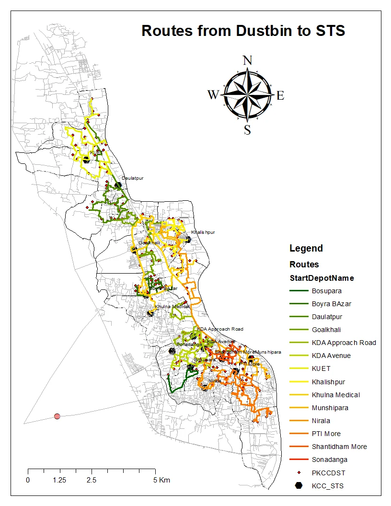

Collection system
The coursework represented a three-stage municipal collection system linking waste-generating points to primary collection or dustbin locations, secondary transfer stations and a final treatment or disposal location.
Routing analysis
GIS network analysis was used to examine how collection vehicles could move between transfer locations and the final disposal site. The project helped connect service planning with road-network constraints and the spatial distribution of collection points.

Planning use
The project demonstrates how vehicle routing can be used to organize municipal service areas, compare route lengths and identify where transfer locations and road-network structure affect collection efficiency.
Limitations
A full operational model would require reliable waste quantities, vehicle capacities, loading and unloading times, shift constraints, road restrictions and time-dependent travel conditions. The coursework is best understood as a spatial routing and service-network exercise.